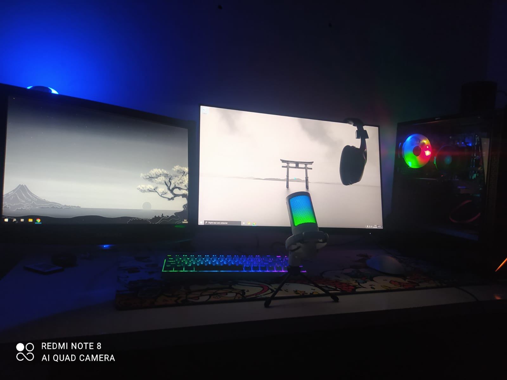

20 de Março de 2023
Minha Área de Estudo e Trabalho

Minha área de trabalho é um quarto aconchegante com um computador,
onde a criatividade ganha vida. Com meu fiel dispositivo, mergulho em
projetos desafiadores e transformo ideias em realidade. Organização,
inspiração e foco são elementos-chave deste espaço que me impulsiona a
alcançar o melhor. Bem-vindo(a) à minha zona de produtividade!